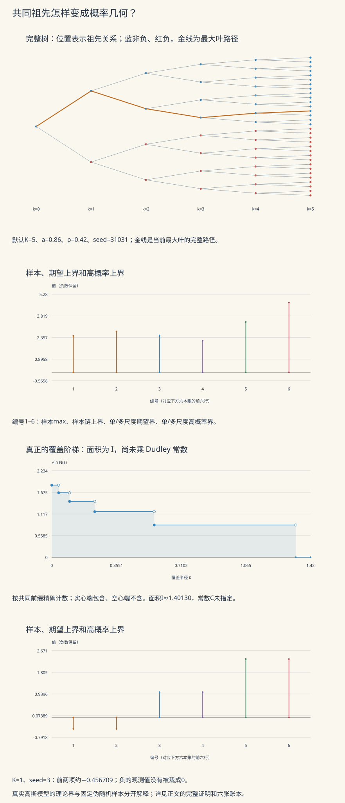

本页目录
高维概率 IV · 链式法与经验过程
上一页用有限方向控制整个球面。本页再问：如果许多候选对象彼此非常相似，能否在比较它们时少付一些代价？我们从一棵有共同祖先的随机树出发，算出它的距离、覆盖数和熵积分，再把这条思路接到经验过程与泛化误差上。
先看共同祖先为什么重要
想象每条路线依次经过若干岔路。路线前半段相同时，它们共享已经累积的误差；不能把两个终点的数值当成独立样本。实验用完整二叉树表达这件事：每条边对应一次独立增量，第 \(k\) 层的尺度为
这里 \(a>0\) 是第一层标准差，\(\rho\in[0,1]\) 控制后续尺度，深度为 \(K\)，叶数为 \(2^K\)。\(X\)、\(a\) 和下面的距离使用同一种任意单位；\(\rho\) 无量纲。真实理论模型的全部 \(g_e\) 独立，叶值则通过祖先相关。实验用固定种子的伪随机数近似这一构造。
一次样本、期望、高概率保证分别是什么
令 \(M=\max_{v\text{ 为叶}}X_v\)，每片叶的方差相同，记为 \(V=\sum_k\sigma_k^2\)。我们将比较：
第二条界先在每层找最大增量，再累加。它依据的是逐样本确定不等式
每一层的最大边不一定拼成一条实际路线，因此这里通常损失了一些信息。尺度下降很快时，多尺度上界可能更紧；尺度全部相同时，单尺度上界可能更紧。不能只凭“用了 chaining”就判定一个具体上界一定更好。

预测以后再揭示
先判断：多尺度界是否总更小？一次样本超过期望上界是否推翻定理？给全部叶值加一个共同随机常数是否改变距离？熵积分发散是否等于一致大数定律失败？
无需 JavaScript 的默认账本。K=5，a=0.86，ρ=0.42，seed=31031，δ=0.05，参照叶索引0。数值由当前固定伪随机规则生成，和旧版使用不同生成器的种子序列不同。
| 对象 | 数值 | 含义 |
|---|---|---|
| 叶数 | 32 | 完整二叉树深度5 |
| 叶方差 V | 0.89785536 | 总体高斯模型 |
| 样本最大值 | 2.46830667 | 当前seed的一次观测 |
| 样本链上界 | 2.76001065 | 当前所有层的最大增量之和 |
| 单尺度期望上界 | 2.49468618 | 控制 E M |
| 多尺度期望上界 | 2.14387859 | 控制 E M |
| 单尺度高概率上界 | 3.40630704 | P(M超过此值)≤0.05 |
| 分层高概率上界 | 4.71465641 | P(M超过此值)≤0.05 |
| 几何熵积分 I | 1.40129565 | 尚未乘 Dudley 的通用常数 |
| 直径 D₀ | 1.34004131 | 不同第一层分支的距离 |
| 负最大值预设 | −0.456708520 | K=1、seed=3，两片叶都为负 |
默认样本最大值超过多尺度期望上界，这并不矛盾：平均值的上界不是每次实现都必须遵守的天花板。“两片叶都为负”预设展示负的样本最大值；图中有完整负轴，不会把它裁成0。
能从实验查到什么
全部父子连接、每条边的标准高斯读数、尺度、增量、父值和子值都可查。每片叶还有完整二进制地址与路径增量。最大叶路径用金色标出；树的屏幕坐标只编码拓扑，屏幕上的线长不代表概率距离。
固定种子并增加 \(K\) 时，原有层的增量保持不变。改变 \(\rho\) 则复用同一组标准化随机读数，只改变它们的尺度。实验限定 \(K=1,\ldots,6\)；\(\rho\) 取 0 或 \(0.01\le\rho\le1\)，以避免极小正尺度超出这里的浮点显示范围。seed 可取完整的32位无符号整数，包括0。
算法使用模 \(2^{32}\) 的线性同余发生器，乘数1664525、增量1013904223，均匀读数为 \((\mathrm{state}+1/2)/2^{32}\)，再以 Box–Muller 变换得到伪高斯读数。这是可复算的有限样本；它不提供独立连续高斯分布的数学证明。
1. 每一层的最大值上界从哪里来
先证明一个会反复使用的小工具。设 \(Y_1,\ldots,Y_m\) 满足中心亚高斯矩母函数界
不要求这些 \(Y_i\) 彼此独立。对 \(\lambda>0\)，
中间一步是 Jensen 不等式。取对数后，
若 \(m>1\) 且 \(s>0\)，取 \(\lambda=\sqrt{2\log m}/s\)，得 \(s\sqrt{2\log m}\)。\(m=1\) 时中心性直接给出期望为0；\(s=0\) 时变量几乎处处为0。若控制绝对最大值，应对 \(\{Y_i,-Y_i\}\) 使用此工具，得到 \(s\sqrt{2\log(2m)}\)，不能漏掉绝对值带来的符号集合。
这也解释了一个边界：若只给 \(\|Y_i\|_{\psi_2}\le s\) 而不要求中心，\(m=1\) 时不能断言 \(\mathbb E\max_iY_i\le Cs\sqrt{\log1}=0\)；取正常数变量即可反驳。
对树的所有叶值，\(s=\sqrt V\)、\(m=2^K\)，得单尺度界。对第 \(k\) 层的 \(2^k\) 条边，\(s=\sigma_k\)，得该层贡献。再对逐样本链不等式取期望，就得到多尺度界。叶子相关不破坏这个证明，因为 max 工具本来就不要求它们独立。
有失败概率的版本必须另算
对真实高斯变量有单侧尾界 \(\mathbb P\{Y>x\}\le e^{-x^2/(2s^2)}\)。因此
逐层版本将失败预算分配为
第 \(k\) 层存在某条边超过 \(b_k\) 的概率至多 \(\delta_k\)。对层再取并集，就有 \(\mathbb P\{M>\sum_kb_k\}\le\delta\)。若 \(\sigma_k=0\)，该层增量和阈值都为0，失败事件为空。这里给出的常数明确，但不保证最优。
2. 距离不是看两个样本值相减
若两片叶的二进制地址共有前 \(r\) 位，它们共享前 \(r\) 层的边。共同部分在 \(X_u-X_v\) 中消去，其余两条路径的边独立，故
令 \(D_r=(2\sum_{k=r+1}^{K}\sigma_k^2)^{1/2}\)，并约定 \(D_K=0\)。这就是树的 canonical 高斯伪度量。一条样本的 \(X_u-X_v\) 可能比 \(d(u,v)\) 大，也可能小；前者是实现，后者是分布的均方尺度。
对高斯增量，矩母函数恰满足
因此本页把 \(d\) 用作矩母函数的标准差代理。若使用前页的 Orlicz 定义，则 \(\|X_u-X_v\|_{\psi_2}=\sqrt{8/3}\,d(u,v)\)，不要把两种尺度的归一化强行写成相等。
这棵树的覆盖数可以精确算
覆盖球的中心限制在叶集合，使用闭球。当 \(D_r\le\varepsilon<D_{r-1}\) 时，同一个长度 \(r\) 前缀下的所有叶子彼此距离至多 \(D_r\)，一个球就够；不同前缀的叶子相距至少 \(D_{r-1}>\varepsilon\)，同一个以叶子为中心的球不能同时覆盖它们。因此
当 \(\rho=0\)，第二层以后没有增量，同一第一层分支中的叶子距离为0。此时只有两个零距离等价类；零宽区间不贡献实际覆盖层。实验保留这些零宽账目，绘图时不假装它们有正面积。
于是本页的熵积分没有数值积分误差，直接按阶梯计算：
这是一条几何恒等式。Dudley 定理说 \(\mathbb EM\le CI\)，其通用常数 \(C\) 在这里并未指定，所以不能把图中的 \(I\) 直接标成数值为它本身的期望上界。
3. 从树上的路径推广到多尺度网
先在有限指标集 \(T\) 上证明，避免把无限极限藏进图里。设 \(X_t\) 中心，增量相对于伪度量 \(d\) 满足上面的矩母函数界。令直径为 \(D>0\)，取尺度 \(\varepsilon_k=D2^{-k}\) 及相应最小网 \(T_k\)。最粗的 \(T_0=\{t_0\}\)；足够细时可取全部零距离等价类的代表。
为每个 \(t\) 选最近网点 \(\pi_k(t)\)。因为
每次接力的增量尺度变小。望远镜求和给出
足够细时最后余项为0；伪度量距离为0的中心增量也几乎处处为0。关键的计数不是随口说“第 \(k\) 层只有 \(|T_k|\) 个点”：相邻两层投影构成的可能边对至多
上式使用覆盖数随精度变细而不减。对这些可能出现的边对用最大值工具，再对层求和，
并集只给一个上界；有些边对根本不会同时实现，不需要强行假设边对独立。
为什么求和变成积分
当 \(\varepsilon\in[\varepsilon_k/2,\varepsilon_k]\) 时，覆盖数单调性给出 \(N(T,d,\varepsilon)\ge N(T,d,\varepsilon_k)\)。区间长度为 \(\varepsilon_k/2\)，所以
这些区间不重叠，求和得到有限集上的 Dudley 界。对无限集合，一个常用充分版本假设全有界、过程采用相对于 \(d\) 的可分可测版本，增量满足统一亚高斯条件，且熵积分有限。用有限子集逼近、控制链尾并取极限，可得
这里不能只因“参数有一个可数稠密集”就默认任意给定过程版本的所有样本路径都连续。可分版本与可测性是定理条件；缺少这些条件时要另处理可测版本或外期望。本页有限实验没有无限极限这一步。
若 \(\mathbb EX_{t_0}=0\)，非绝对上确界的期望中锚点可以消去。但对 \(\mathbb E\sup_t|X_t|\)，应先写
共同的随机平移不会改变所有增量，却会改变绝对大小，这正是锚点不能凭空消失的原因。
继续向前的边界。Dudley 是可用但未必最紧的上界。一般 chaining 优化整条网链的几何；对于中心高斯过程，Talagrand 的 \(\gamma_2\) 泛函给出在通用常数意义下匹配的上下界。这里不证明该深层定理，也不把任意一棵二叉树的逐层 max 账本当成最优链。单尺度上界、Dudley 上界和 Sudakov 下界是不同对象，不能把“积分面积大于某个矩形面积”当成所有上界优劣的论证。
4. 接到经验过程：先对称化，再用随机度量
设 \(Z_1,\ldots,Z_n\) 独立同分布，\(P_nf=n^{-1}\sum_i f(Z_i)\)，\(Pf=\mathbb Ef(Z)\)。先考虑有限可测函数类 \(\mathcal F\)，并假设有可积包络，以保证以下期望存在。我们要控制
引入独立同分布的“影子样本” \(Z'_1,\ldots,Z'_n\)。条件于原样本，Jensen 不等式给出
每对样本可以交换，所以差值向量的联合分布在乘上独立 Rademacher 符号 \(\epsilon_i\in\{-1,1\}\) 后不变。再用三角不等式拆开两组样本，得到
不是原经验过程凭空获得了随机样本度量，而是先经过这座桥。条件于 \(Z_1,\ldots,Z_n\)，定义
对条件矩母函数逐项使用 \(\cosh x\le e^{x^2/2}\)，
现在才可以用条件 Dudley。选定 \(f_0\) 后，绝对增量版给出
注意随机覆盖数与积分仍在 \(\mathbb E_Z\) 内。对于一般不可数类，需另要求可分、可测性和适当包络；否则使用外期望，并不能无条件把星号或锚点去掉。
若 \(|\mathcal F|=m\) 且 \(|f|\le B\)，可直接对有限条件 Rademacher 类使用绝对最大值工具，得到一个明确的充分界
维数或类大小只是复杂度的一部分，包络尺度、绝对值、样本量与置信语言也都需要保留。
5. 四道迁移题与完整解答
1 · 为什么同尺度时逐层 max 可能更松？
令 \(\rho=1\)，于是每层标准差均为 \(a\)，\(V=Ka^2\)。两种界分别为
当 \(K>1\) 时 \(\sum_k\sqrt k>K\)，所以逐层账本更大。反过来，若 \(\rho=0\)，只有第一层有增量，叶子实际上只复制两个不同随机值。朴素单尺度界仍按 \(2^K\) 计数，得到 \(a\sqrt{2K\log2}\)；逐层界只剩 \(a\sqrt{2\log2}\)。按零距离等价类先去重的单尺度界也能恢复这个改善，因此改善来自识别几何冗余，不是方法名字。
2 · 三片叶的距离为什么满足超度量不等式？
设两两共同前缀长度为 \(r(u,v)\)。若 \(u,v\) 共享前 \(p\) 位、\(v,w\) 共享前 \(q\) 位，那么 \(u,w\) 至少共享前 \(\min(p,q)\) 位。因此
因为 \(D_r\) 随 \(r\) 不增，
这比通常的三角不等式更强。它说明“同一个前缀簇”可以恰好成为闭球，也验证了覆盖数的前缀计数。若某层尺度为零，得到伪超度量，不同叶子的距离可以为零；先取商空间仍可使用同一论证。
3 · 常数方向到底该不该固定？
对原经验过程，
因为 \(P_n1=P1=1\)。所以任意常数平移不会自动使原泛化误差发散。可是未中心的条件 Rademacher 过程满足
若 \(c\) 任意大，它的绝对上确界通常无界，直接的对称化上界就失去信息。可以选定代表，例如 \(f(0)=0\)，或先把常数方向作为等价类处理，再使用有限包络与覆盖数。
类似地，取所有 \(X_t=Z\)，则增量距离全为0，熵积分为0；中心 \(Z\) 满足 \(\mathbb E\sup_tX_t=0\)，但 \(\mathbb E\sup_t|X_t|=\mathbb E|Z|\) 通常为正。这个例子同时检查中心性和绝对值锚点。
4 · 熵积分发散，为什么仍能证明一致大数定律？
考虑
以欧氏距离定义 Lipschitz 常数，则 \(|f(x)|\le\sqrt d\)，全类有共同有界包络且等度连续。由 Arzelà–Ascoli，它在一致范数中全有界。对任意 \(\eta>0\)，取有限 \(\eta\)-网 \(\{f_1,\ldots,f_m\}\)；对每个 \(f\) 找近邻 \(f_j\)，有
有限个有界函数分别满足强大数定律，所以
对可数序列 \(\eta=1,1/2,1/3,\ldots\) 取共同概率1事件，再让 \(\eta\downarrow0\)，便得到一致强大数定律。全有界给出的可数稠密函数集和经验泛函在一致范数下的连续性也保证了这里的上确界可测。
这个类的一致范数熵具有 \(\log N(\varepsilon)\asymp_d\varepsilon^{-d}\) 的小尺度量级，常数允许依赖固定维数。可以这样看两侧：
上界取间距与 \(\varepsilon/\sqrt d\) 同阶的格点，数量为 \(O_d(\varepsilon^{-d})\)。把格点函数值按 \(\varepsilon\) 量化，并沿格点邻接图的一棵生成树依次记录。原点值固定为0，Lipschitz 条件使每个新值相对于父值只有常数种选择，因此编码数至多 \(\exp(C_d\varepsilon^{-d})\)。同编码函数在格点附近的误差至多常数倍 \(\varepsilon\)；每个非空编码类取一个真实函数作代表，即得内部覆盖。
下界在远离原点的区域放置 \(c_d\varepsilon^{-d}\) 个互不相交、半径 \(4\varepsilon\) 的小球。每个球上可独立选择是否放一个高度 \(4\varepsilon\)、斜率1的锥形帐篷；取所有帐篷的最大值，仍然1-Lipschitz且原点为0。两种不同选择在某个球心相差 \(4\varepsilon\)，不能同在一个半径 \(\varepsilon\) 的一致范数球里，于是需要至少 \(2^{c_d\varepsilon^{-d}}\) 个球。
未截断 Dudley 积分因而类似 \(\int_0^1\varepsilon^{-d/2}d\varepsilon\)：\(d=1\) 有限，\(d\ge2\) 发散。发散只说明这条特定的未截断充分上界没给出有限常数；上面的有限网证明仍然成立。至于收敛速率，需要截断、局部化或更精细工具。
6. 去往下一门课程时带走什么
把一个上确界问题写成“索引对象—增量距离—各尺度覆盖数—量词明确的概率结论”。对于学习问题，再检查函数类包络、对称化和锚点。看到一个数值最大值时，先辨认它是一次样本、某个期望，还是带指定失败概率的上界；看到一个熵积分时，先检查下端是否可积、其常数是否已指定。
本页多尺度网证明与一般版本可对照 Vershynin 的 High-Dimensional Probability 第二版 §8.1–8.2；作者课程与书籍主页提供公开版本。有限树的 canonical 距离、精确覆盖阶梯和两种显式失败概率预算均已在本页独立推导。下一步可进入统计学习理论，也可沿随机分析路线继续学习布朗运动与 Itô 积分。